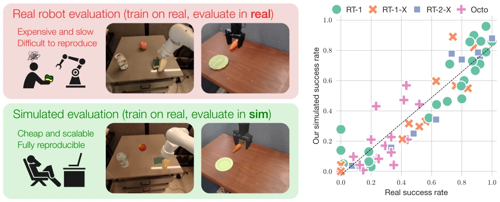
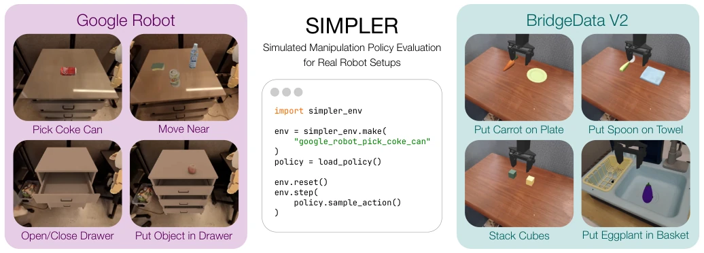
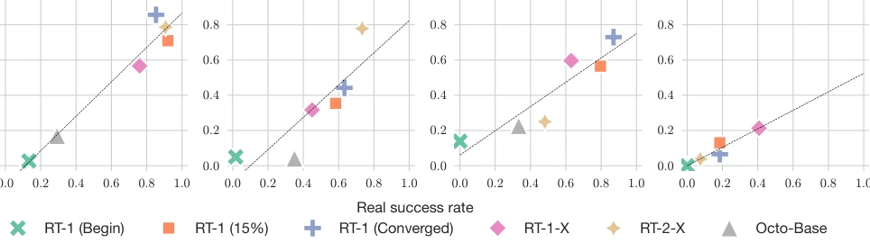
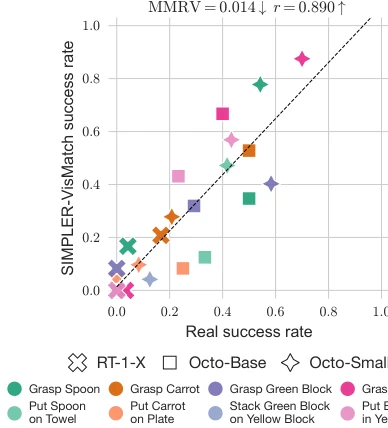
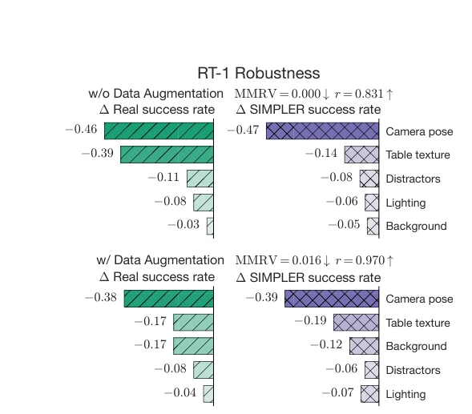
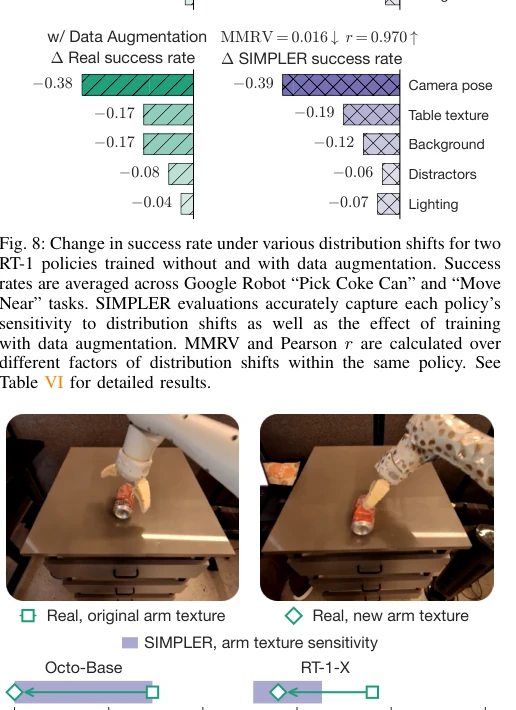
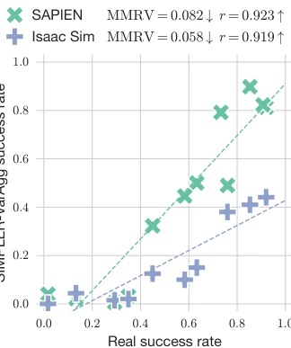
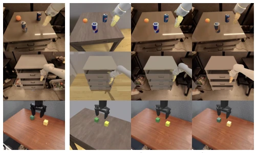
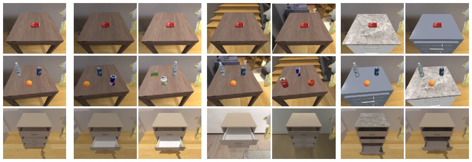

This paper undertakes a quite "pragmatic" task: since real-world evaluation is too expensive and slow, it is better to test policies trained on real hardware within simulation. The author team is from UCSD, Stanford, and DeepMind, with a prestigious lineup. The core of the SIMPLER framework lies in "good enough", not pursuing perfect digital twins, but pursuing the correlation between simulation and real-world performance. This approach is smart, avoiding the pitfall of high-fidelity modeling, but also exposes limitations: it still relies on extensive manual adjustment of textures and physical parameters, not fully automated. For the community pursuing "plug-and-play", this is more like a carefully tuned benchmark suite, rather than a general solution. However, being able to prove that simulation evaluation can accurately reflect the policy's sensitivity to distribution shifts is already much stronger than many papers relying purely on MSE verification. It reminds us that the value of simulation evaluation lies not in "likeness", but in "accuracy". Additionally, the paper open-sources the environment and construction process, which contributes greatly to the community, but building new environments still requires a certain threshold.
With the rise of generalist manipulation policies such as RT-1 [6], RT-2 [5], evaluating the capabilities of these models has become exceptionally difficult. Real-world evaluation is not only expensive and slow, but also hard to reproduce; as the scope of policy tasks expands, the evaluation burden grows exponentially. Existing benchmarks such as YCB [7] or NIST [65] standardize objects, but it is difficult to unify variables such as lighting and camera settings. Although simulation evaluation is commonly used in the autonomous driving field, manipulation tasks involve complex dynamic interactions, and directly applying digital twin solutions from the navigation field is too costly. Additionally, existing Sim-to-Real research mostly focuses on training in simulation and deploying in the real world, while research on the reverse "real-world training, simulation evaluation" is scarce. We need a scalable, reproducible, and reliable proxy evaluation method to make up for the shortcomings of real-world evaluation. Especially for generalist policies, evaluation needs to cover a large number of scenarios, which real hardware is hard to undertake.

Fig. 1: Characterizing generalist robot manipulation policies typically involves evaluating them on many tasks across many scenarios, a laborious undertaking in the real world (top left). In this work, we design an evaluation procedure in which policies trained on real data are evaluated in purpose-built simulated environments (bottom left). Our approach yields a strong correlation between real-world and simulated performance (right) for various open-source robot policies [6, 11, 50] across two commonly used robot embodiments (Google Robot and WidowX) and over ∼1500 evaluation episodes. These results highlight the potential of simulation-based approaches for evaluating generalist real-world robot manipulation policies in a scalable, reproducible, and reliable way.
The overall process is divided into three stages: environment construction, control alignment, and visual alignment. First, the SIMPLER environment is built based on SAPIEN, covering common settings such as Google Robot and WidowX. For the control gap, a System Identification (SysID) method is adopted: using offline datasets to record real-world trajectories, optimizing the simulator's PD parameters (stiffness and damping) via simulated annealing to minimize the 6D pose error between simulation and real-world trajectories. Specific loss functions include translational error Ltransl and rotational error Lrot, aligning control by minimizing Lsysid. For the visual gap, "green screen compositing" and "texture baking" strategies are proposed. Green screen compositing overlays real-world background images onto the simulation foreground, reducing background distribution shifts. Texture baking projects real-world object textures onto the simulation model, and adjusts the robot arm color to match different lighting stages in real-world videos. Finally, MMRV (Mean Maximum Rank Violation) and Pearson r are introduced as evaluation metrics, focusing not only on linear correlation but also on the accuracy of policy rankings.

Fig. 2: We introduce SIMPLER, a suite of open-source simulated evaluation environments for common real robot manipulation setups, namely the Google Robot evaluations from the RT-series of works [6, 5, 11], and environments from the BridgeData V2 dataset [66]. All environments can be imported with a single line of code and can be interacted with through a standard Gym interface. Additionally, we open-source policy inference code for real-to-sim evaluation of common generalist robot policies (RT-1 [6], RT-1-X [11], and Octo [50]), and we provide detailed guides for evaluating new policies and creating new evaluation environments. All materials are available at https://simpler-env.github.io.

Fig. 6: Real vs. SIMPLER success rates on Google Robot tasks. SIMPLER environments with the “Visual Matching” evaluation setup show strong correlation to real policy performance. Good simulated evaluation environments have low MMRV, i.e., only produce rank violations for policies with similar real-world success rates, along with high Pearson correlation (r). See Table IV for detailed results.

Fig. 7: Real vs. simulation success rates for BridgeData V2 tasks. SIMPLER evaluations have strong correlation with real policy per- formance: for all but one task (light orange), all policies are ranked correctly. MMRV and Pearson r are estimated per task and averaged. See Table V for detailed results.
实验Experiments
实验在 Google Robot 和 BridgeData V2 设置上进行，评测了 RT-1 [6]、RT-1-X [11] 和 Octo [50] 等开源策略。结果显示，SIMPLER 评估与真机表现具有强相关性（Pearson r 高达 0.976），MMRV 值极低。消融实验表明，SysID 对控制对齐至关重要，缺失会导致 MMRV 显著上升；视觉匹配（Visual Matching）优于变体聚合（Variant Aggregation）。此外，仿真能准确预测策略对光照、背景等分布偏移的鲁棒性，甚至能预测真机中未见的机械臂纹理变化带来的性能下降。这证明了仿真评估不仅能衡量性能，还能捕捉策略的行为模式。
Experiments are conducted on Google Robot and BridgeData V2 settings, evaluating open-source policies such as RT-1 [6], RT-1-X [11], and Octo [50]. Results show that SIMPLER evaluation has a strong correlation with real-world performance (Pearson r up to 0.976), with extremely low MMRV values. Ablation studies show that SysID is crucial for control alignment; its absence leads to a significant rise in MMRV. Visual Matching outperforms Variant Aggregation. Additionally, simulation can accurately predict the policy's robustness to distribution shifts such as lighting and background, and can even predict performance degradation caused by robot arm texture changes unseen in the real world. This proves that simulation evaluation can not only measure performance but also capture the policy's behavior patterns.

Fig. 8: Change in success rate under various distribution shifts for two RT-1 policies trained without and with data augmentation. Success rates are averaged across Google Robot “Pick Coke Can” and “Move Near” tasks. SIMPLER evaluations accurately capture each policy’s sensitivity to distribution shifts as well as the effect of training with data augmentation. MMRV and Pearson r are calculated over different factors of distribution shifts within the same policy. See Table VI for detailed results.

Fig. 9: SIMPLER evaluations can predict policy sensitivity to changes in arm texture for multiple policies in Google Robot “Pick Coke Can” task. See Table VIII for detailed results.

Fig. 10: Comparison of SIMPLER-“Variant Aggregation” using SAPIEN (default) vs. Isaac Sim [49] on Google Robot “Pick Coke Can” and “Move Near” tasks. Both physics simulators lead to good correlation between simulated and real-world evaluation success rates. See Table IV and Table XI for detailed results.
其他图片Other Figures

Fig. 5: Illustration of our “Visual Matching” approach for reducing the visual appearance gap between real environments and raw simula- tion. Visual Matching consists of (1) green screening, i.e. segmenting out interactive simulated assets and overlaying them onto real-world backgrounds; and (2) texture matching, which involves projecting real object textures onto simulation assets and tuning robot arm colors using real videos.

Fig. 11: Subset of environment variations under our “Variant Aggregation” evaluation setup, visualized in SAPIEN from Google Robot’s egocentric view. The variations cover different lightings, backgrounds and table textures and are modified from ReplicaCAD [59] scenes.